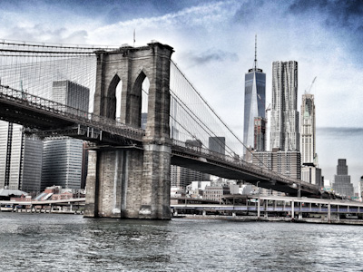
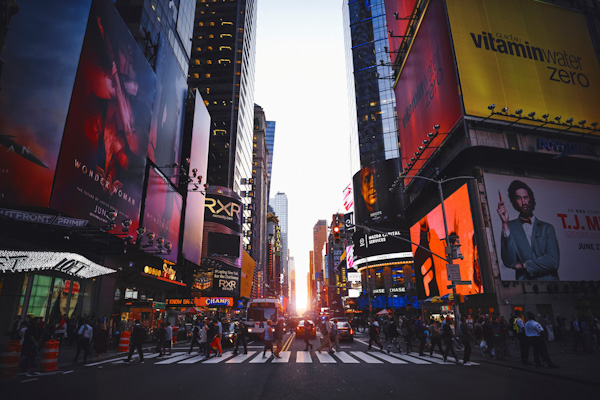

statue de la Liberté (Statue of Liberty), est
l'un des monuments les plus célèbres des États-Unis.
Cette statue monumentale est située à New York, sur la Liberty Island, au sud de Manhattan,
à l'embouchure de l'Hudson et à proximité d'Ellis Island.
Pesant 204 tonnes et mesurant 92,9 mètres, elle est construite en
France et offerte par le peuple français, en signe d'amitié entre les deux nations,
pour célébrer le centenaire de la Déclaration d'indépendance américaine

Pont de Brooklyn:
Le pont de Brooklyn (en anglais Brooklyn Bridge), à New York, est l'un des
plus anciens ponts suspendus des États-Unis.
Il traverse l'East River pour relier les arrondissements de Manhattan et de Brooklyn.
Avant la construction du pont de Brooklyn, Manhattan et Brooklyn
sont deux villes distinctes et on ne peut passer de l'une à l'autre qu'en employant le ferry ;
le pont relie d'ailleurs,
de manière symbolique, les deux hôtels de ville

Pourquoi New-York
Si New York peut faire peur par son envergure et sa démesure,
on ne peut pas savoir tant qu’on n’y a pas mis les pieds,
à quel point la ville peut aussi être calme et reposante à certains endroits ou moments.
Printemps, été, automne, hiver, même combat ! Il est absolument impossible de s’ennuyer à NYC.
New-York et les gens
La ville regorge des gens de diverses origines qui cohabitent avec hamonie,
avec entrain , avec joie ,peine ...
Une nouvelle culture , une nouvelle façon de penser.